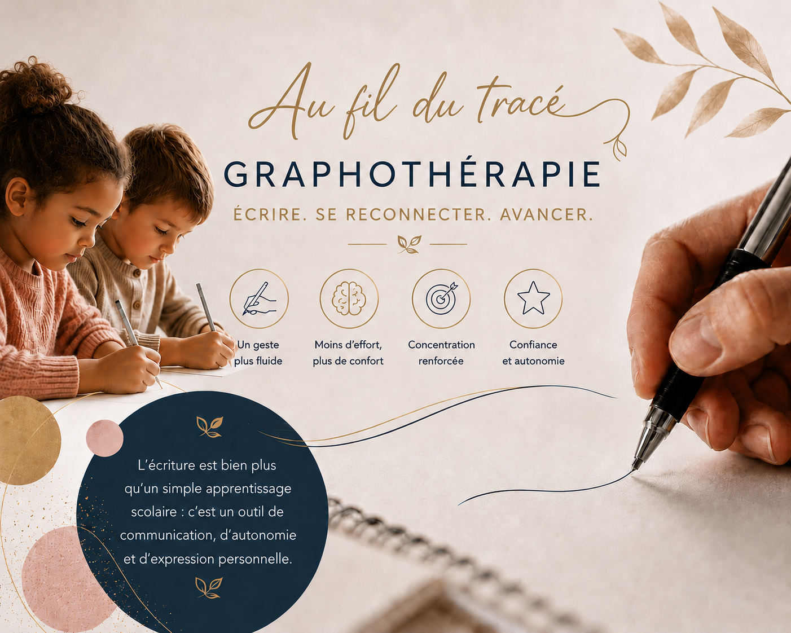

L'écriture,
un geste qui se réapprend
J'accompagne les enfants, les adolescents et les adultes à retrouver une écriture fluide et confortable, à Corme-Écluse.

7 ans d'expérienceauprès de personnes en situation de handicap, au quotidien.
Graphothérapeute certifiéeformée aux troubles Dys, TSA, TDAH et handicaps moteurs.
20 ans d'expériencedans l'accompagnement des personnes et de leurs parcours professionnels.
Une approche globale, humaine et sur mesure —
pour chaque enfant, chaque adulte, chaque situation.
La graphothérapie, pour qui ?
Écrire fatigue, fait mal, décourage
Écriture illisible ou lente, douleurs, stylo mal tenu, cahiers peu soignés, refus face à l’écrit…
Reconnaître les signes →Suivre le rythme devient dur
Relecture difficile, évaluations non terminées, douleurs sur les textes longs, remarques des professeurs…
Reconnaître les signes →Retrouver une écriture efficace
Se relire difficilement, préparer un concours ou un examen, remarques de l’entourage sur la lisibilité…
Reconnaître les signes →Comment se déroule un accompagnement ?
Tout commence par un bilan. Ensuite, des séances régulières, adaptées à l'âge et aux objectifs de chacun.
En savoir plus sur la méthodeLe bilan — 1h30 à 2h · 110 €
On prend le temps de faire connaissance et d'observer l'écriture. Compte-rendu écrit envoyé par mail.
Les séances — 45 min · dès 45 €
Des activités variées et ludiques, une séance toutes les deux semaines, avec un point régulier sur les progrès.
Ce que quelques séances peuvent changer
Théo, gaucher, en début de CE1, présentait une écriture maladroite et une gestion de l'espace graphique difficile. Quelques séances de graphothérapie lui ont permis d'améliorer sa prise du crayon, de fluidifier son écriture et de gagner en confiance.
Des ateliers d'écriture, en tout petit groupe
Pour les enfants et les adolescents, pendant les vacances. Pour les séniors, au sein des établissements. Des moments de jeu, de stimulation et de partage autour de l'écriture.
Une question sur l'écriture de votre enfant ?
Écrivez-moi, je vous réponds simplement. Sans engagement.
Posez-moi une question →